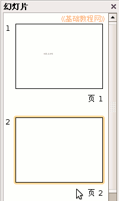
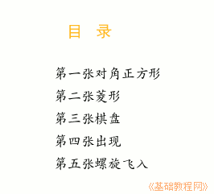
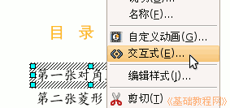
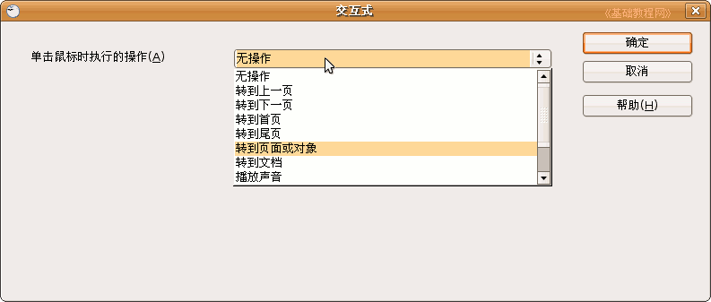
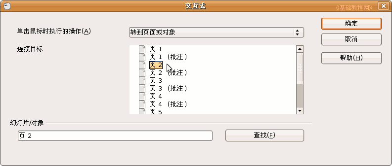
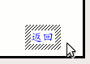
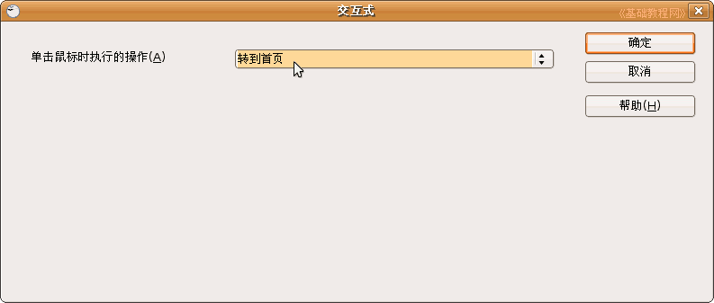

OpenOffice.org 教程之 Impress 演示文稿
作者：TeliuTe 来源：基础教程网
七、交互式操作 返回目录 下一课有时候需要在各个幻灯片来回切换，而默认的单击是下一张，我们可以用超链接的方法来实现，下面我们来看一个练习；
1、插入目录页
1）启动Impress，点“创建”按钮，进入一个空白文档；
2）点菜单“文件－ 打开”命令，找到自己的文件夹，选中第四课的幻灯片“练习四”，选中打开；
3）在左边的窗格中，选中第一张幻灯片，然后点右键，选“新建幻灯片”命令，在第一张后面插入一页新幻灯片；

向上拖动新幻灯片，到第一张的前面，这样就把它放到开头去了，
点“文件－另存为”命令，以“交互式操作”为文件名，保存文件到自己的文件夹；
4）插入一个文本框，输入文字“目录”，设置好格式；
5）再插入一个文本框，输入“第一张对角正方形”，设置好格式，
同样再插入四个文本框，里面文字分别是：“第二张菱形、第三张棋盘、第四张出现、第五张打字机”；
；
排好位置，保存一下文件
2、动作设置
1）选中第一行“对角正方形”的文本框，瞄准边框鼠标变成手形时点右键，选择“交互式”命令，弹出一个设置面板；

2）在出来的面板中间点“无操作”，出来一个下拉列表，选择“转到页面或对象”；

3）在接下来的链接目标列表中选择“页 2”，点右边的“确定”返回；

然后再点下边的“确定”返回到幻灯片中，放映的时候，鼠标指到这一行会变成手形，表示有一个超链接；
3）同样给第二行文字设置交互，在链接目标列表框中选择“页 3”，依次类推直到第五行文字的“页 6”；
保存一下文件，放映一下，在目录页中点击各行文字，看看是否能直接跳到相应的页面中；
3、设置返回
1）返回幻灯片中，在左边窗格选中第二张幻灯片，在幻灯片右下角插入一个文本框，输入文字“返回”；

2）瞄准边框点右键，选择“交互式”，点“无操作”选“转到首页”，点确定返回；

3）瞄准这个文本框的边框点右键，选择“复制”命令，然后到后面四张幻灯片中选“粘贴”命令，都复制一个过来；
保存一下文件，放映一下试试，返回的功能是不是很方便？同样还可以设置一个结束放映的链接；
本节学习了Impress设置交互式操作，如果你成功地完成了练习，请继续学习下一课内容；
本教程由86团学校TeliuTe制作|著作权所有
基础教程网：http://teliute.org
美丽的校园……
转载和引用本站内容，请保留作者和本站链接。